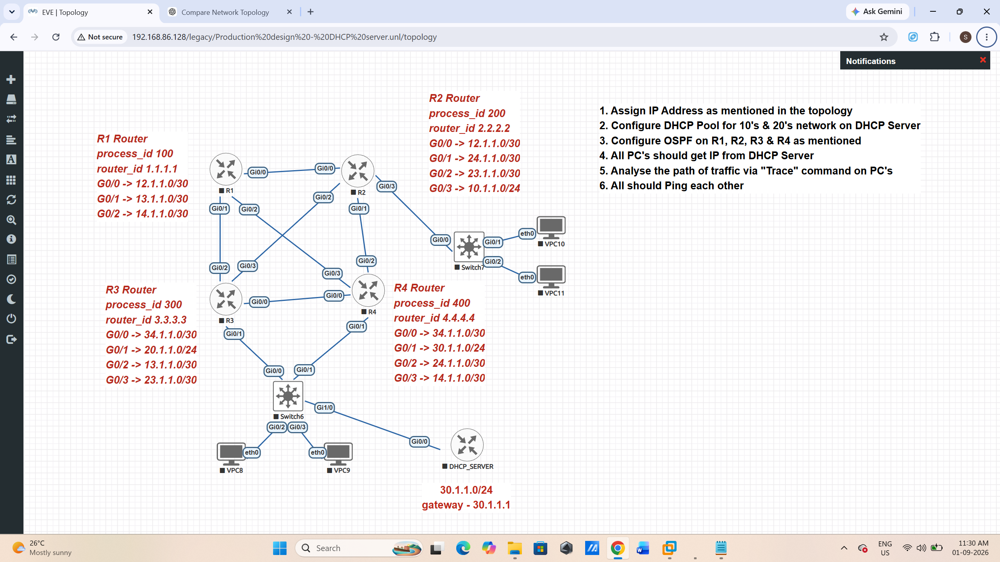

Lab 11 - Complete OSPF + DHCP
Objective
Build a complete routed network using four routers, OSPF, a central DHCP server and VPCS clients.
Topology
R1
/ | \
/ | \
R2 ------- R3
\ /
\ /
R4
|
DHCP_SERVER
LAN10 LAN20
10.1.1.0/24 20.1.1.0/24

Addressing
R1 G0/0 12.1.1.1/30 G0/1 13.1.1.1/30 G0/2 14.1.1.1/30 R2 G0/0 12.1.1.2/30 G0/1 24.1.1.1/30 G0/2 23.1.1.1/30 G0/3 10.1.1.1/24 R3 G0/0 34.1.1.1/30 G0/1 20.1.1.1/24 G0/2 13.1.1.2/30 G0/3 23.1.1.2/30 R4 G0/0 34.1.1.2/30 G0/1 30.1.1.1/24 G0/2 24.1.1.2/30 G0/3 14.1.1.2/30 DHCP_SERVER G0/0 30.1.1.2/24
DHCP Server
hostname DHCP_SERVER interface g0/0 ip address 30.1.1.2 255.255.255.0 no shutdown ip default-gateway 30.1.1.1 ip dhcp excluded-address 10.1.1.1 ip dhcp excluded-address 20.1.1.1 ip dhcp pool LAN10 network 10.1.1.0 255.255.255.0 default-router 10.1.1.1 ip dhcp pool LAN20 network 20.1.1.0 255.255.255.0 default-router 20.1.1.1
R2 DHCP Relay
interface g0/3 ip address 10.1.1.1 255.255.255.0 ip helper-address 30.1.1.2 no shutdown
R3 DHCP Relay
interface g0/1 ip address 20.1.1.1 255.255.255.0 ip helper-address 30.1.1.2 no shutdown
OSPF
Configure OSPF Area 0 on all four routers.
R1 process 100 R2 process 200 R3 process 300 R4 process 400
Verification
show ip interface brief show ip ospf neighbor show ip route ospf show ip dhcp pool show ip dhcp binding
PC DHCP
VPCS> dhcp VPCS> show ip
Expected PC Addresses
PC1 10.1.1.3/24 Gateway 10.1.1.1 PC2 10.1.1.4/24 Gateway 10.1.1.1 PC3 20.1.1.3/24 Gateway 20.1.1.1 PC4 20.1.1.2/24 Gateway 20.1.1.1
Real Failure Encountered
VPCS> dhcp DDD Can't find dhcp server
Investigation
R2 had the correct DHCP relay:
ip helper-address 30.1.1.2
R2 could reach the DHCP server network through OSPF. R4 could ping the DHCP server. However, the DHCP server initially could not reach the 10.1.1.0/24 and 20.1.1.0/24 networks.
Test
DHCP_SERVER# ping 10.1.1.1 ..... Success rate is 0 percent
Root Cause
The DHCP request could reach the DHCP server, but the server did not have a return route toward the client networks.
Fix Without a Default Route
ip route 10.1.1.0 255.255.255.0 30.1.1.1 ip route 20.1.1.0 255.255.255.0 30.1.1.1
Verify
DHCP_SERVER# ping 10.1.1.1 !!!!! DHCP_SERVER# ping 20.1.1.1 !!!!!
After adding the specific routes, the PCs successfully received addresses from the DHCP server.
Traffic Analysis
From PC1 to PC3:
VPCS> trace 20.1.1.3 1 10.1.1.1 2 23.1.1.2 3 20.1.1.3
Path
PC1 | | 10.1.1.1 v R2 | | 23.1.1.2 v R3 | | 20.1.1.3 v PC3
Final Connectivity Tests
PC1> ping 10.1.1.4 PC1> ping 20.1.1.2 PC1> ping 20.1.1.3 PC2> ping 20.1.1.2 PC3> ping 10.1.1.3
Debugging Commands
debug ip ospf events debug ip ospf adj debug ip dhcp server events debug ip dhcp server packet debug ip dhcp relay undebug all
Lessons Learned
- DHCP relay is required when the DHCP server is on another subnet.
- ip helper-address does not replace routing.
- DHCP is bidirectional from a routing perspective.
- The server needs a return path to the client network.
- A default route is not the only solution.
- Specific static routes can solve the return-path problem.
- OSPF can provide the transit routing while static routes handle server return paths.
- show ip route is one of the most important troubleshooting commands.